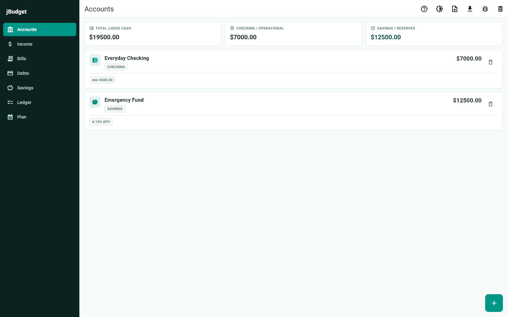
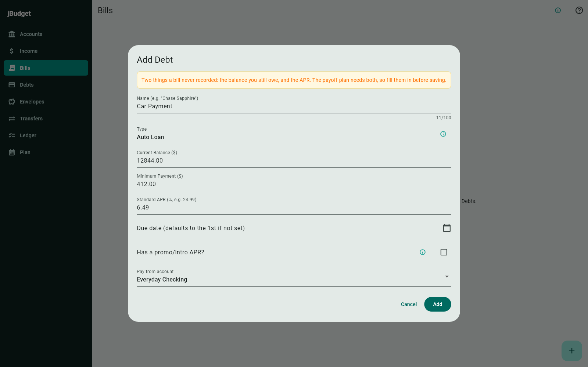

What You'll Need Before Starting
- Current balance of your checking, savings, or other accounts
- Your paycheck frequency and amount (weekly, biweekly, monthly?)
- A list of recurring bills and their due dates (rent, utilities, insurance, subscriptions)
- A list of debts: balance, interest rate, and minimum payment for each
If you're not sure about something, make a reasonable estimate. jBudget lets you update everything later, and you'll confirm real payments as they happen.
Step 1: Add Your Accounts (2–3 minutes)
Open jBudget and go to the Accounts tab. Add each account you want to track:
- Checking account: Current balance, minimum you want to keep (e.g., $500)
- Savings account: Current balance, minimum you want to keep (often $0, since it's for emergencies)
- Money market, CD, or other: Current balance, minimum
jBudget tracks each account separately. This is important because a plan that looks good overall might rely on money you keep inaccessible in savings. By tracking separately, you see the real constraints.
The "minimum to protect" field lets you say "I never want my checking below $500"—jBudget factors that into the plan.

Step 2: Add Your Income (2–3 minutes)
Go to the Income tab. Add each source of regular money:
- Salary: Amount and frequency (weekly, biweekly, monthly, or custom dates)
- Side gig: If it's predictable, add it with its frequency
- Tax refund: If annual, add as annual income on the expected date
- Other recurring: Bonus, dividend, reimbursement—anything regular
For frequency, jBudget handles weekly, biweekly, semi-monthly (1st and 15th), monthly, quarterly, annual, and custom dates.
Note: jBudget will show income in the "To Confirm" queue until you receive it. This is intentional—you can adjust if something changes. Don't stress about being perfectly accurate; confirm as you go.
Step 3: Add Your Bills (3–4 minutes)
Go to the Bills tab. Add every recurring payment that's not a debt:
- Rent or mortgage: Amount and due date (usually monthly on the 1st)
- Utilities: Gas, electric, water, internet. Amount and due date.
- Insurance: Home, auto, health. Amount and due date (often semi-annual or annual)
- Subscriptions: Streaming, software, phone. Amount and frequency.
- Taxes: Property tax, estimated quarterly tax. Amount and due date.
- HOA or condo fees: Amount and due date.
- Anything else that recurs: Car registration, vehicle inspection, annual fees
This is where jBudget gets powerful. Most people think "monthly" and assume 12 bills per year. But if your car insurance is $600 twice a year, quarterly property tax is $500 four times a year, and annual HOA renewal is $300—those are the weeks that create cash-flow problems.
Enter them. jBudget will show you the months where multiple bills stack up.
Step 4: Add Your Debts (2–3 minutes)
Go to the Debts tab. For each debt, enter:
- Name: Credit card, car loan, student loan, mortgage, etc.
- Current balance: The amount you owe right now
- Interest rate (APR): Annual percentage rate
- Minimum payment: What you owe each month at minimum
- Due date: The day each month the payment is due
- Promotional APR (if applicable): If a credit card has 0% APR expiring soon, mark the expiration date. jBudget will warn you.
If you have a mortgage with escrow (property tax and insurance held in reserve), you can enter that separately so jBudget doesn't double-count it when you also enter property tax as a bill.
You may need to grab a statement to find the APR and minimum payment. This usually takes 30 seconds per debt.

Step 5: Choose Your Payoff Strategy
Go to the Plan tab. jBudget will ask you to choose a strategy:
- Avalanche: Pay minimums, send extra to highest-interest debt. Saves most interest overall.
- Snowball: Pay minimums, send extra to smallest balance. Psychological wins, faster early progress.
- Compare both: Run both strategies and see them side by side.
If you're not sure, choose "Compare both." jBudget will show you:
- Projected debt-free date for each strategy
- Total interest paid
- Month-by-month Account Activity table
- Any months where an account runs short
Step 6: Set Your Extra Payment
jBudget will ask: "How much extra can you send each month?" This is the amount beyond minimums that goes toward paying down debt faster.
If you're not sure, start conservative (e.g., $100–200). jBudget shows the results immediately. If the plan still has room, increase it. If the plan shows a shortfall, decrease it.
The goal is to find the amount that works for your cash flow—not the maximum amount you could send, but the amount you can actually afford to send every month without overdrafting.
Step 7: Run Your Plan
Hit "Run Plan." jBudget will show you:
- Debt-free date: When you'll pay off all your debts (if the plan is fundable)
- Total interest: How much you'll pay in interest
- Account Activity table: Month-by-month breakdown of every transaction and balance
- Shortfall warnings: Any dates when an account runs dry (in red)

Step 8: Adjust if Needed
If you see a shortfall—"Checking runs out of money on August 15th"—you have options:
- Send less extra to debts. Use the slider to reduce the extra payment and see the impact.
- Shift money between accounts: Maybe transfer savings to checking in high-expense months.
- Extend the timeline: A longer payoff means smaller monthly payments and more breathing room.
- Try a different strategy: Snowball vs. avalanche might have different cash-flow impacts.
Adjust, run the plan again, and see the results. It takes seconds.
Step 9: Keep It Honest with the Confirm Queue
Once you have a plan, the real work begins: living with it and confirming real payments.
Go to the Ledger tab. You'll see a "To Confirm" queue with scheduled income and bills. When your paycheck lands, confirm it. When a bill is paid, confirm it.
This tells jBudget what actually happened. If a bill was larger or smaller than expected, adjust it before confirming. If a paycheck is delayed, jBudget will flag it as past-due but the plan keeps working.
This confirmation process is what keeps your plan accurate as real life diverges from projection.
What If You Made a Mistake?
You can edit or delete any entry anytime. Change an income amount, add a bill you forgot, update an account balance—the plan will re-run automatically.
There's no penalty for adjusting. This is a planning tool, and plans change as you learn more about your financial life.
Key Takeaway
Setup takes about 10 minutes. The goal isn't perfection; it's a realistic plan based on your actual accounts, income, bills, and debts. As you live with jBudget and confirm real payments, the plan gets more accurate.
Start simple, adjust as needed, and let jBudget show you what's actually possible.
Ready to build your plan?
Download jBudget on Microsoft Store